Как даровать старому двигателю вторую жизнь
Срок службы, или ресурс, двигателя со временем достигает своего предела. Наступает пора старения...
Ухудшаются многие эксплуатационные характеристики двигателя. Снижаются топливные показатели, и в первую очередь – уровень масла в картере вследствие угара, содержание токсичных отработавших газов превышает допустимые пределы, давление масла в системе смазки заметно падает. При измерении обнаруживается падение компрессии в отдельных цилиндрах двигателя. Из выхлопной трубы прогретого двигателя валит белый дым. Дымление увеличивается при разгоне и при опережении зажигания. Появляются нехарактерные для работы двигателя стуки и шумы. На стоянке под картером сцепления образуются масляные пятна. Кажется, что машине пришел конец. Но не все еще потеряно.
Попав в руки заботливого хозяина, двигатель может и должен обрести вторую, новую жизнь. Но это возможно лишь в том случае, если двигатель не достиг предельно изношенного состояния.
Итак, работоспособность двигателя может быть восстановлена. Для этого требуется заменить изношенные детали новыми стандартного размера или расточить их с применением сопрягаемых с ними новых деталей ремонтного размера. При этом понадобятся следующие детали ремонтных размеров: поршни, поршневые кольца, вкладыши коренных и шатунных подшипников коленчатого вала, седла впускных и выпускных клапанов, полуобработанные втулки распределительного вала и направляющие втулки клапанов. И потребуется специальный инструмент для разборки и сборки: съемники, ключи, выколотки, набор щупов, приспособления, которые, по прилагаемым в книге рисункам, можно заказать любому токарю.
Последовательность разборки практически одинакова для всех моделей двигателей автомобиля.
Двигатель, разобранный, вычищенный и промытый, подготовлен к тому, чтобы начать его сборку.
Сборка, начинающаяся с полной ревизии всех деталей двигателя: их измерений, выбраковки изношенных и замены новыми, ведется параллельно с их ремонтом. Выбраковываются даже те детали, ресурс которых еще до конца не выработан. При покупке новых деталей взамен непригодных старых и изношенных может оказаться полезным каталог запасных частей автомобиля. При замене детали новой (запасной) обращайте внимание на ее качество.
При сборке двигателя рекомендуем использовать эту книгу, как указатель последовательности действий и методик их выполнения.
Итак, ремонтируем и собираем двигатель ГАЗ-24 и его модификации.
Перед сборкой двигателя масляные каналы блока надо прочистить ершиками и продуть сжатым воздухом.
Сборку двигателя производим в следующем порядке. Надеваем картер сцепления на блок и закрепляем его. Надеваем на передний конец распределительного вала распорную втулку (распорное кольцо) толщиной 4,1 + 0,05 мм и упорный фланец толщиной 4–0,5 мм. Запрессовываем шестерню распределительного вала (текстолитовую) и закрепляем ее болтом с шайбой. Момент затяжки 5,5–6 кгс?м. Зазор между упорным фланцем и ступицей шестерни 0,1–0,2 мм.
Номинальные диаметры опорных шеек распределительного вала, мм:
• первая шейка – 52,00–51,98;
• вторая шейка – 51,00–50,98;
• третья шейка – 50,00–49,98;
• четвертая шейка – 49,00–48,98;
• пятая шейка – 48,00–47,98.
Если окажется, что диаметр опорных шеек меньше указанных пределов, распределительный вал подлежит замене.
Изношенные опорные втулки (подшипники) распределительного вала выпрессовывают из блока и заменяют новыми, обеспечивая совпадение масляных отверстий в блоке и втулках. При запрессовке втулок для предупреждения их деформации рекомендуется сопрягаемые поверхности покрывать смесью моторного масла с графитом.
Запрессованные в блок втулки обрабатывают борштангой, а в условиях личного гаража пользуются специальной длинной разверткой-скалкой. Если таких инструментов нет, то втулки пришабривают по опорным шейкам устанавливаемого распределительного вала. В ходе шабрения достигается полное прилегание сопрягаемых поверхностей.
Чтобы предупредить брак, шабрят коротким рабочим ходом хорошо заточенным инструментом, изготовленным из трехгранного напильника. Такой шабер при заточке надо обязательно охлаждать. Плохо заточенный шабер обязательно оставит следы в виде рисок и заусенцев на поверхности втулки, поэтому шабер следует подвергнуть доводке на шлифовальном камне. После черновой обработки втулки давить на шабер рукой следует слабее. В конце обработки краской, приготовленной из смеси сажи с моторным маслом, намазывают опорную шейку распределительного вала и проворачивают в отверстии втулки. Закрашенные места слегка соскабливают. Так же обрабатывают и последующие втулки.
Приступаем к чистке трубки смазки шестерен распределительного вала и приворачиваем ее с помощью болта и хомутика к блоку. Вставляем собранный распределительный вал в опорные втулки блока цилиндров, смазав предварительно его опорные шейки маслом для двигателя.
Через отверстия в шестерне крепим двумя болтами с пружинными шайбами упорный фланец к блоку цилиндров, но болты окончательно не затягиваем.
Отрезаем от шнура две набивки уплотнителя заднего коренного подшипника коленчатого вала (длиной 120 мм каждая), вкладываем их в блок и держатель уплотнителя; концы набивки должны выступать на одинаковую длину.
Чистим коленчатый вал, для чего выворачиваем все пробки грязеуловителей шатунных шеек и удаляем из них отложения; промываем и продуваем сжатым воздухом масляные каналы и полости грязеуловителей, заворачиваем пробки моментом 3,8–4,2 кгс?м и закрепляем их.
Проверяем состояние рабочих поверхностей коленчатого вала – забоины, надиры и прочие дефекты не допускаются.
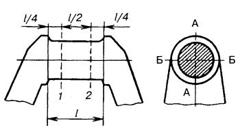
Рис. 5. Схема измерения шейки коленчатого вала: 1 и 2 – пояса измерения; АА и ББ – плоскости измерения.
Шейки коленчатого вала в ходе эксплуатации двигателя изнашиваются неравномерно: по длине они принимают форму конуса, по окружности – форму овала. Наибольший износ шеек возникает со стороны коренных шеек, т. к. эти места постоянно нагружены инерционными силами. Шейки коленчатого вала измеряют в двух поясах 1 и 2 (рис. 5), разность которых дает конусность и в двух плоскостях АА и ББ, чем определяется овальность. Конусность и овальность коренных и шатунных шеек не должна превышать 0,03 мм. Допустимый износ шатунных шеек коленчатого вала 0,05 мм и коренных 0,07 мм. Кроме конусности и овальности коленчатый вал может иметь задиры. Незначительные задиры можно зачистить бруском корборунда мелкой зернистости. Если шейки имеют глубокие риски и задиры или конусность и овальность не более 0,05 мм, коленчатый вал подлежит замене новым или шлифовке под ремонтный размер. Размеры шеек должны соответствовать данным, приведенным в табл. 8.
Таблица 8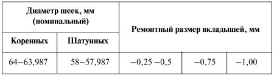
Закладываем в полость на заднем конце коленчатого вала шариковый подшипник (радиальный однорядный с одной защитной шайбой 60203 или 80203С9; размеры 17х40х12).
Перед установкой маховика проверяем, нет ли незаметных повреждений на его рабочей поверхности. Глубокие кольцеобразные риски, задиры следует опилить плоским напильником. Обод маховика подлежит замене, если длина зубьев менее 7 мм. Если зубчатый венец маховика изношен мало, то зубья венца опиливают ровно напильником. Если зубья сильно изношены, надо сбить венец маховика, нагреть его до температуры 180–200 °C (во избежание отпуска зубьев маховика превышать указанную температуру не следует) и посадить его на маховик с другой стороны. Торцы зубьев запилить на конус для облегчения захода шестерни стартера в зацепление.
Одновременно шлифуется и ведущий диск сцепления. При уменьшении толщины диска и маховика снижается давление пружины на ведомый диск. Поэтому кожух сцепления (корзину) разбирают и при сборке под термоизоляционные шайбы подкладывают металлические шайбы, толщина которых равна толщине снятого металла на корзине и маховике.
Затем к коленчатому валу приворачивают маховик, предварительно надев на болты стопорные пластины. Гайки крепления затянуть моментом 7,6–8,3 кгс?м, их следует законтрить, отогнув один из усов стопорной пластины на грань гайки.
Из дерева сделайте простое козловое приспособление с горизонтальными металлическими призмами (рис. 6) и (в случае замены маховика) произведите статическую балансировку коленчатого вала с маховиком. Дисбаланс (более тяжелая сторона повернется вниз) устраняют высверливанием металла из маховика со стороны сцепления на радиусе 150 мм сверлом диаметром 10 мм на глубину не более 12 мм. Расстояние между центрами отверстий – не менее 14 мм. Коленчатый вал с маховиком на призмах должен останавливаться после вращения в случайных положениях.
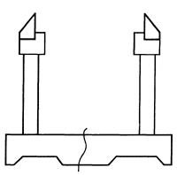
Рис. 6. Приспособление для статической балансировки коленчатого вала с маховиком.
На первую коренную шейку коленчатого вала надевают заднюю упорную шайбу баббитовой стороной к щеке вала (толщина шайбы: номинальная 2,5–0,05 мм, первая ремонтная 2,6–0,05 мм).
Задний уплотнитель коленчатого вала в блоке и держателе уплотнителя следует обжать оправкой (рис. 7), а острым ножом обрезать на блоке и держателе выступающие концы набивки. Срез должен быть ровным. Выступание набивки над плоскостью разъема 3–5 мм. Коленчатый вал должен быть с маслосгонной резьбой. Если этой резьбы нет, ее необходимо нанести. Размеры резьбы приведены на рис. 8.
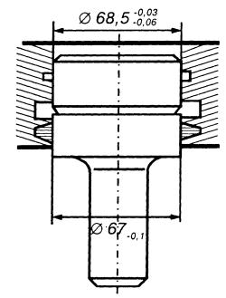
Рис. 7. Оправка для обжима уплотнителя коленчатого вала.
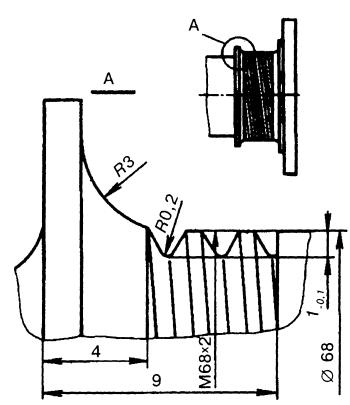
Рис. 8. Маслосгонная резьба на заднем конце коленчатого вала.
Резьбу лучше нарезать на токарном станке. Маслосгонная резьба (винтовая линия) уменьшает давление масла на уплотнитель и увеличивает его работоспособность.
Чистой тряпкой протирают вкладыши коренных подшипников и их постели, куда вкладывают вкладыши; чистым маслом для двигателя смазывают вкладыши коренных подшипников и шейки коленчатого вала, после чего вал укладывают в блок цилиндров (под постели вкладышей на блоке желательно подложить очень тонкую прозрачную бумагу).
Затем переднюю упорную сталебаббитовую шайбу ставят баббитовой стороной вперед так, чтобы штифты, запрессованные в блок и переднюю крышку, входили в пазы шайбы. Толщина передней шайбы должна быть в пределах 2,35–2,45 мм.
Заднюю упорную сталебаббитовую шайбу надевают на коленчатый вал.
При установке крышек коренных подшипников необходимо, чтобы метки (или цифры), обозначающие номер подшипника, были размещены с одной стороны и находились друг против друга. Посадить крышки коренных подшипников на свои места можно легким постукиванием резинового молотка. Усик задней упорной сталебаббитовой шайбы должен войти в паз крышки.
На шпильки надевают шайбы, приворачивают гайки крепления крышек и равномерно их подтягивают. После каждой затяжки динамометрическим ключом гаек моментом 10–11 кгс?м, начиная с первой крышки, поворачивают коленчатый вал монтажкой, вращая храповик или маховик, который должен свободно вращаться при небольшом усилии. Если усилие поворота большое, из постели вкладыша следует удалить тонкую прозрачную бумагу, заложенную ранее, снова повторить операцию крепления первой крышки и законтрить гайки.
Последующие крышки затягивают по одной по аналогии с первой, каждый раз поворачивая коленчатый вал монтажкой.
В пазы держателя сальника помещают резиновые прокладки (сапожки), а их боковую поверхность, выступающую из паза, покрывают мыльным раствором. Держатель сальника ставят на место, после чего затягивают гайки на шайбах Гровера.
Затем напрессовывают до упора шестерню коленчатого вала, совмещая метку «о», расположенную на зубе шестерни коленчатого вала, с «риской» у впадины зуба на текстолитовой шестерне распределительного вала.
Продольный люфт коленчатого вала должен отсутствовать и в этом надо убедиться (осевой зазор между торцом задней упорной сталебаббитовой шайбы и плоскостью бурта первой коренной шейки 0,075–0,175 мм). Проверка производится так: закладывают отвертку (монтажку) между первым кривошипом вала и передней стенкой блока и, пользуясь ею как рычагом, отжимают вал в сторону заднего конца двигателя. Щупом измеряют зазор. Величина зазора регулируется подбором передней сталебаббитовой упорной шайбы соответствующей толщины. Толщина передней шайбы варьируется в следующих пределах: 2,35–2,37, 2,37–2,40, 2,40–2,45 мм.
Вот теперь следует окончательно затянуть болты упорного фланца через отверстия (текстолитовой) шестерни распределительного вала, надеть на шпильки блока паронитовую уплотнительную прокладку (ставить на герметизирующую пасту) и крышку распределительных шестерен, предварительно запрессовав в нее сальник при помощи оправки (рис. 9).
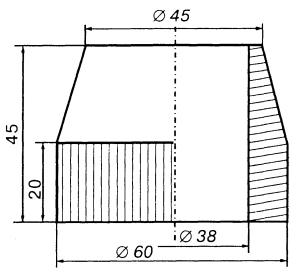
Рис. 9. Оправка для запрессовки сальника в крышку распределительных шестерен.
Затем следует слегка навернуть гайки, сцентрировать крышки по переднему концу коленчатого вала при помощи центрирующей оправки (рис. 10).
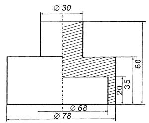
Рис. 10. Оправка для центрального переднего сальника коленчатого вала.
Выравнивание зазоров производится легкими ударами резинового молотка по крышке. После этого крышку окончательно закрепляют, удаляют центрирующую оправку, надевают маслоотражатель на вал и напрессовывают ступицу шкива коленчатого вала. После чего в коленчатый вал следует завернуть храповик, предварительно надев на него пружинную шайбу.
Затянув очень туго (ключом, монтажкой) храповик, еще раз проверьте продольный люфт коленчатого вала и убедитесь, что маслоотражатель не задевает за крышку шестерен.
Определите предельные номинальные размеры, допуск и зазоры в сопрягаемых деталях (гильза-поршень) с помощью табл. 9.
Таблица 9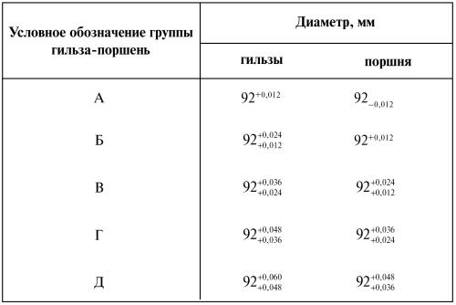
Примечания:
1. Диаметр поршня измеряется в нижнем сечении – юбки, перпендикулярно оси пальца, при комнатной температуре.
2. За диаметр гильзы принимается ее наименьший диаметр (при наличии конусности и овальности).
Для справки, диаметр верхнего основания юбки поршня меньше диаметра нижнего основания на 0,013–0,038 мм.
Если гильзы и поршни комплектуются из одной группы, то поршни подбираются к гильзам с зазором 0,012–0,24 мм (табл. 10).
Таблица 10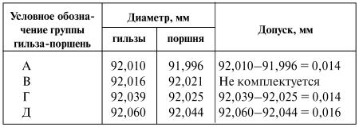
Зазоры трех комплектов собранных деталей (гильза-поршень) лежат в пределах допуска. Пределы 0,012–0,024 мм.
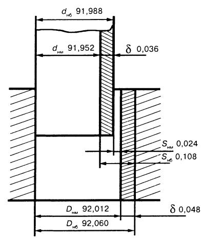
Рис. 11. Расчет размерных групп при комплектовании поршней с гильзами.
Может быть и такое сочетание (исходные данные приведены на рис. 11):
• диаметр гильзы D = 92+0,060+0,12мм;
• диаметр поршня D = 92-0,048+0,012мм.
Предельные размеры:
• гильза Dнб = 92 + 0,060 мм;
• Dнм= 92 + 0,012 = 92,012 мм;
• поршень dнб = 92 + (–0,012) = 91,988 мм;
• dнм = 92 + (–0,048) = 91,952 мм.
Допуски:
• гильза б = 92,060 – 92,012 = 0,048 мм;
• поршень б = 91,988 – 91,952 = 0,036 мм.
Зазоры:
• Sнб = 92,060 – 91,952 = 0,108 мм;
• Sнм = 92,012 – 91,988 = 0,024 мм.
Допуск зазора:
? = Sнб – Sнм = 0,108 – 0,024 = 0,084 мм.
Подобрать новые поршни к гильзам можно также по усилию протягивания ленты-щупа толщиной 0,05 мм и шириной 10 мм.
Поршень вставляют в гильзу днищем вниз, а ленту-щуп закладывают между юбкой поршня и зеркалом гильзы с противоположной стороны от Т-образной прорези на поршне. Усилие протягивания должно быть 25–35 Н (2,5–3,5 кгс). Подбор поршней производят без поршневых колец и пальцев при температуре 20 ±3 °C. После подбора поршни и гильзы маркируют мелом.
Наибольший износ побывавших в эксплуатации гильз измеряют индикатором-нутромером в верхней части цилиндра, в области поршневых колец. Если износ на конусность и овальность превышает 0,2 мм, то гильзу надо растачивать под ремонтный размер или заменить новой. Образованный верхним поршневым кольцом поясок в верхней части гильзы срезают шабером.
Прежде чем вынуть гильзу из блока, ее необходимо замаркировать порядковым номером и пометить ее положение в блоке, чтобы в дальнейшем в случае годности их можно было бы установить на прежние места.
Затем следует проверить зазор между юбкой поршня и менее изношенной нижней частью гильзы в плоскости, перпендикулярной поршневому пальцу. Допустимый зазор между изношенными деталями – 0,1–0,25 мм.
У поршня наиболее подвержены изнашиванию отверстия в бобышках под поршневой палец, юбка и канавки поршневых колец. Палец не должен свободно перемещаться в отверстиях бобышек поршня.
Высота компрессионных канавок в поршне 2+0,07+0,05мм, высота компрессионных поршневых колец – 2–0,12. Максимальный зазор – 0,082, минимальный – 0,050 мм. Высота маслосъемной канавки в поршне – 5+0,055+0,035мм, высота маслосъемных колец 0,7–0,4 + 3,50,1 + 0,7–0,04 мм, максимальный зазор – 0,335 мм, минимальный – 0,135 мм. Если зазор между канавкой и верхним поршневым кольцом больше 0,15 мм, то поршень заменяют.
Для надежного уплотнения нижнего гнезда блока цилиндров с гильзой, чтобы охлаждающая жидкость не попала в поддон картера, необходимо изношенное и разъеденное коррозией посадочное гнездо блока тщательно очистить от шлама, обезжирить и промазать эпоксидным клеем. Перед установкой гильзы в гнездо блока на нее надевают уплотнительное медное кольцо, смазанное тонким слоем герметика. Гильза должна входить в гнездо свободно, без усилий. Для обеспечения надежного уплотнения верхний торец гильзы должен выступать над плоскостью блока на 0,02–0,10 мм. Чтобы гильза не выпадала, ее надо закрепить держателем.
Следующий этап работы – подбор поршневого пальца к шатуну. Палец во втулке верхней головки шатуна должен при комнатной температуре перемещаться под усилием большого пальца руки и в то же время не должен выпадать из втулки под собственным весом (поршневой палец должен быть слегка смазан маслом).
Поршневой палец следует запрессовать в поршень и шатун с помощью оправки (рис. 12).
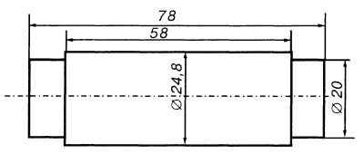
Рис. 12. Оправка для запрессовки поршневого пальца в поршень и шатун.
Поршень нагревают до 70 °C (в горячей воде).
Поршни ставят по метке «назад», выбитой на поршне. Отверстие для смазки зеркала цилиндра в нижней головке шатуна диаметром 1,5 мм должно быть обращено в сторону, противоположную распределительному валу.
По гильзе необходимо проверить поршневые кольца. Зазор в стыках должен составлять 0,3–0,5 мм у компрессионных колец, у стальных дисков маслосъемных – 0,3–0,7 мм. В изношенных гильзах наименьший зазор – 0,3 мм. Щупом надо проверить боковой зазор между кольцами и стенкой поршня: зазор для верхнего и нижнего компрессионных колец должен быть 0,05–0,082 мм и для сборного маслосъемного – 0,135–0,335 мм.
Поршневые кольца надевают на поршень: сначала маслосъемное кольцо, потом нижнее компрессионное, потом верхнее. При этом нижнее компрессионное кольцо, имеющее внутреннюю выточку, ставят этой выточкой вверх, обращенной к донышку поршня.
Поршни в сборе контролируют по массе. Разница в массе у поршней в сборе с шатуном, пальцем и поршневыми кольцами должна быть не более 8 г. Массу поршня можно уменьшить снятием металла со щек, например фрезерованием торца бобышек до размера не менее 23 мм от оси отверстия под поршневой палец. Массу шатуна изменяют фрезерованием прилива на верхней головке до размера не менее 19 мм от центра головки и фрезерованием прилива на крышке нижней головки до глубины не менее 36 мм от ее центра.
Вставлять поршни в гильзы следует так: протереть постели шатунов и их крышек, протереть и вставить в них вкладыши; провернуть коленчатый вал так, чтобы кривошипы первого и четвертого цилиндров заняли положение, соответствующее НМТ; смазать вкладыши, поршень, шатунную шейку вала и гильзу маслом; развести стыки поршневых колец под углом 180° друг к другу, стыки дисков маслосъемного кольца – под углом 180° друг к другу и на 90° по отношению к стыкам расширителей; вставить поршень в гильзу с помощью конического приспособления для сжатия поршневых колец (рис. 13).
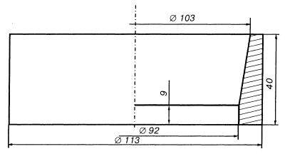
Рис. 13. Приспособление для сжатия поршневых колец двигателя.
Номера, выбитые на шатуне и его крышке, соответствуют порядковому номеру цилиндра. Проверить правильность положения поршня и шатуна в гильзе: метка «назад» обращена к маховику, а отверстие в шатуне – в сторону, противоположную распределительному валу.
Поднять шатун к шейке коленчатого вала, надеть крышку (номера, выбитые на крышке и шатуне, направлены в одну сторону). Завернуть гайки моментом 6,8–7,5 кгс?м и обязательно законтрить при помощи стопорной гайки. Момент затяжки – 0,3–0,5 кгс?м. Шатунные гайки ставятся без шайб.
Аналогично вставить поршни 2-го и 3-го цилиндров.
Установить масляный насос.
Монтажкой повернуть храповик коленчатого вала до начала сжатия в первом цилиндре и к фланцу шкива коленчатого вала привернуть двухручьевой шкив привода вентилятора.
На ободе шкива имеются два паза.
При совмещении второго по направлению вращения паза с установочным штифтом шестерен распределительного вала поршень первого цилиндра займет положение в верхней мертвой точке. (Первый паз служит для установки зажигания.)
Установить толкатели и поставить боковую крышку толкателей.
Установить привод масляного насоса. Перед установкой повернуть валик привода в положение, показанное на рис. 14а, и поставить привод в гнездо блока.
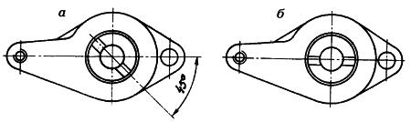
Рис. 14. Положение паза на втулке валика привода масляного насоса и распределителя зажигания: а – перед установкой привода в блок; б – после установки привода в блок.
После установки привода прорезь во втулке валика должна быть направлена к оси двигателя и смещена от двигателя, как показано на рис. 14б (большая масса полукольца располагается у двигателя).
Проверить положение бегунка прерывателя-распределителя. Бегунок должен быть направлен к первой свече.
Надеть на шпильки цилиндров прокладку, смазав ее с обеих сторон графитовой смазкой, и установить головку цилиндров с клапанами в сборе. Высота головки блока – 94,4 мм (для степени сжатия 6,7). Затянуть гайки с шайбами динамометрическим ключом моментом 8,5–9,0 кгс?м, соблюдая порядок, указанный в инструкции. Вставить штанги толкателей в отверстия головки. Длина штанги – 281 мм (для степени сжатия 8,2) и 284,5 мм (для степени сжатия 6,7). Установить собранную ось коромысел на шпильки и закрепить гайками с шайбами моментом 5 кгс?м. Установить зазоры между коромыслами и клапанами – первым, вторым, четвертым и шестым. Повернуть коленчатый вал на один оборот и установить зазоры между коромыслами и клапанами – третьим, пятым, седьмым и восьмым. Смонтировать детали и агрегаты двигателя.